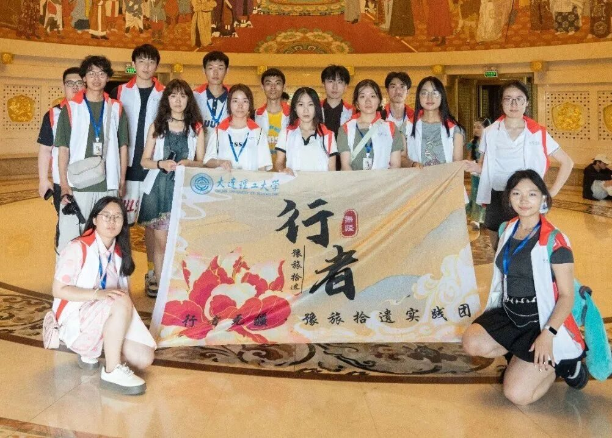
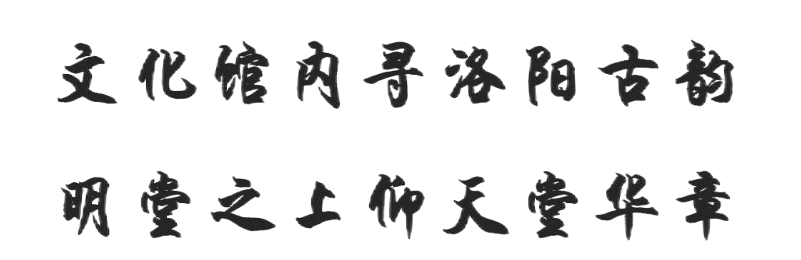

【行者无疆·豫旅拾遗】文化馆内寻洛阳古韵，明堂之上仰天堂华章


今日，行者们将追寻洛阳非遗的足迹，让心灵在这片文化沃土上绽放诗意。

洛阳市文化馆
晨光初照，行者们踏入了洋溢着浓郁文化氛围的洛阳市文化馆，得以一睹侯震先生主题绘画展的风采。这场视觉的盛宴行者们深切感受到了艺术的无限魅力，享受了一场心灵的洗礼。侯震先生，这位才华横溢的画家，以其独到的艺术视角，匠心独运，为我们展现了一幅幅栩栩如生、动人心弦的画作。
上下滑动查看更多
在侯震先生的笔下，历史人物跃然纸上，宛若穿越时空，在我们面前细语那段悠远的沧桑。而他笔下的风景，更是让人沉醉，仿佛一步跨入画中，亲身体验大自然的奇幻与美妙此次展览，不仅让我们领略了画作之美，更让我们体会到了艺术家那份对艺术的执着追求与坚守不懈的精神。
上下滑动查看更多
明堂天堂
行者们以满腔的热情穿梭于明堂与天堂之间，深入探究此地所承载的悠久历史。我们细心聆听每一则故事，凝视每一件文物与模型，这些不仅深刻地烙印着时代的记忆，更是过往繁华景象的生动展现。通过此番游历，行者们不仅获取了宝贵的历史知识，更在传统文化与现代思维的碰撞中，激发了绚烂的思维火花。
上下滑动查看更多
“望乔木而怀故园，研文献而恋故国，睹非遗而识华夏。”非物质文化遗产，不仅仅是承载着精湛技艺与古老智慧的工艺品，它们更蕴含着清晰可鉴的技艺流程，真挚可感的匠心独运，以及可亲身体验的生活智慧。有持续加强对非遗文化的传承、推广、守护与宣传，方能令非遗记忆焕发生机，活在当下，绽放新时代的光华，凝聚起民族复兴的磅礴力量。
穿城过巷访遗踪，文化馆前史意浓。
明堂天堂皆古迹，千年遗迹话桑蓬。
碑文篆刻藏风骨，壁画彩绘显笔功。
游子心怀敬仰意，留连忘返步匆匆。
1
END
1
这个夏天，
和行者们一起豫旅拾遗！
来源 | 行者无疆·豫旅拾遗实践团
图片 | 行者无疆·豫旅拾遗实践团
文字 | 李凌志
排版 | 杩健辉、范伊诺
审核 | 张家铭